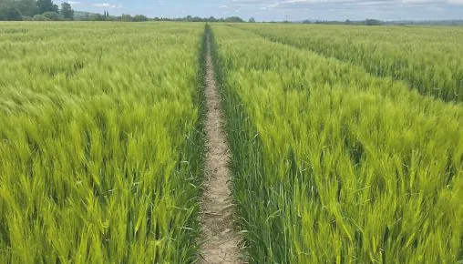

Tevékenységeink
Kereskedelem, tanácsadás, termelés
A cégcsoport vezetése 2017 júliusában az input üzletág bezárásáról döntött. Azóta három területre összpontosítunk.
01
Terménykereskedelem
Gabona és olajos magvak a szántóföldi termelőktől belföldi és külföldi végfelhasználókig.
A Nyugat-Dunántúlon a szántóföldi növénytermesztők partnere vagyunk: az általuk megtermelt gabonát és olajos magvakat belföldi és külföldi végfelhasználóknak értékesítjük. Terménykereskedelmi üzletágunkat a 2000-es évek elejétől építettük fel; ma a cégcsoport árbevételének több mint kétharmadát adja.
- Gabonalaboratórium
- Jól felszerelt laboratóriumunk segít abban, hogy megbízhatóan teljesítsük vevőink minőségi elvárásait.
- Tárolás
- Bak környékén több ezer tonnás tárolókapacitás, minőség szerinti osztályozással és szakszerű tárolással.
- Logisztika
- Egész éven át tartó logisztikai szolgáltatás, meghatározóan külföldi, de belföldi vevőink számára is.
02
Szaktanácsadás
Szakmailag megalapozott információ a növénytermesztési döntésekhez.
Az inputanyag-kereskedelem 2017-es megszüntetése után szaktanácsadói csapatunk továbbra is ügyfeleink rendelkezésére áll a mindennapokban, szakmai rendezvényeinken és fajtabemutatóinkon.
Az eredményes gazdálkodáshoz nem elég megvásárolni a szükséges input anyagokat: szakszerűen, a megfelelő időben és mennyiségben, a megfelelő körülmények között ki is kell juttatni őket. Ez vezeti munkánkat, amikor partnereinkkel határszemlézünk vagy szakmai konzultációt folytatunk.
Formái
03
Mezőgazdasági termelés
Szántóföldi növénytermesztés mintegy 2500 hektáron, baromfitenyésztés saját takarmánnyal.
Termelő cégeink Bak és vonzáskörzetében mintegy 2500 hektáron folytatnak szántóföldi növénytermesztést. Nagy figyelmet fordítunk a magas színvonalú gépesítettségre, az informatikai lehetőségek kihasználására, valamint környezetünk és a természet megóvására.
Célunk, hogy terményeink egészségesen, jó minőségben jussanak el az állattenyésztéshez, a malmokhoz és a feldolgozó üzemekhez.
Legfontosabb növényeink
Szolgáltatás a környékbeli gazdáknak

Baromfitenyésztés
Hahóti telephelyünkön korszerű körülmények között pulykatenyésztés folyik, több telephelyünkön pedig broilercsirkét állítunk elő. A takarmányt zalatárnoki tápkeverő üzemünkben, saját termésű terményből állítjuk elő.
- Saját termésBak és vonzáskörzete
- Tápkeverő üzemZalatárnok
- PulykaHahót
- Broilercsirketöbb telephelyen
Vetőmag